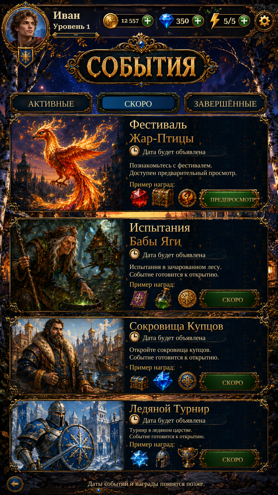

Actual Unity page using Home’s exact clean environment and tint, source-guided event scenery, and separate Firebird spark/glow layers. The title, shared header and corrected reward layout are retained.
Events remain upcoming; rewards are labelled examples. The Firebird preview works. Schedules, participation and event rewards are not implemented.

Actual Unity Play Mode capture; isolated test save. Reference values are not copied into the save.
Implementation and verification · Remaining reference differences · Original / before / after details · Firebird layers over black / white / magenta